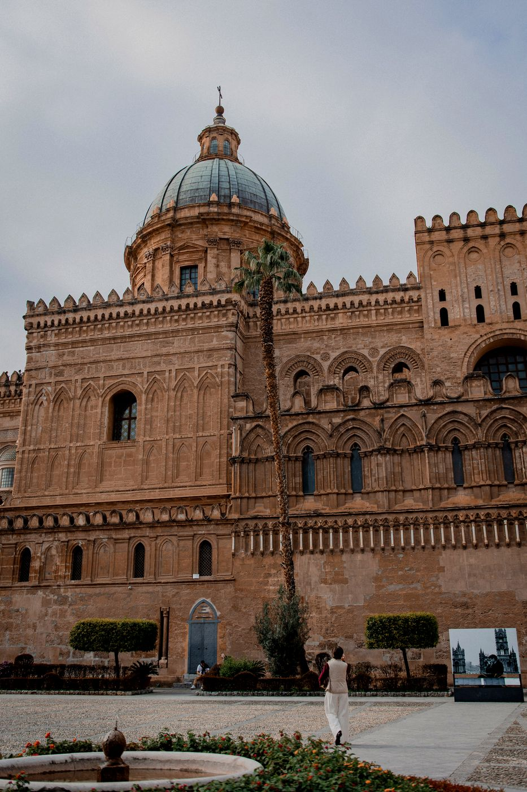

Пешеходная · около 3 часов
Обзорная экскурсия по Палермо
Главные сокровища исторического центра за одно утро: от Театра Массимо и рынка Капо до Кафедрального собора, площади Претория и барочных интерьеров, от которых захватывает дух.
- Театр Массимо
- Рынок Капо
- Кафедральный собор
- Площадь Претория
- Четыре угла
- Марторана
- + 2 барочные жемчужины
Стоимость — в личном сообщении
Цена зависит от количества человек и от того, нужны ли наушники для большой группы.